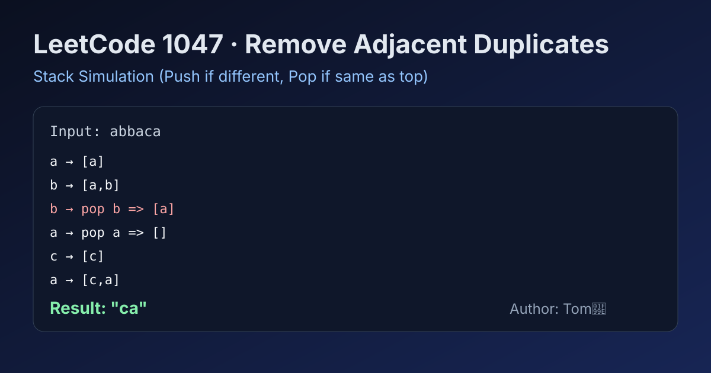

LeetCode 1047: Remove All Adjacent Duplicates In String (Stack Simulation via String Builder)
LeetCode 1047StringStackSimulationToday we solve LeetCode 1047 - Remove All Adjacent Duplicates In String.
Source: https://leetcode.com/problems/remove-all-adjacent-duplicates-in-string/

English
Problem Summary
Given a string s, repeatedly remove adjacent equal pairs until no such pair remains, then return the final string. The result is guaranteed to be unique.
Key Insight
Treat the answer-in-progress as a stack: when the current character equals the stack top, pop it (delete pair); otherwise push it. This naturally handles chain reactions after deletions.
Brute Force and Limitations
A direct brute force repeatedly scans the entire string and rebuilds it after each deletion round, which can degrade to O(n^2).
Optimal Algorithm Steps
1) Initialize an empty stack-like builder.
2) Iterate characters in s from left to right.
3) If builder is non-empty and top equals current char, remove top.
4) Otherwise append current char.
5) Convert builder to final string.
Complexity Analysis
Time: O(n), each character is pushed/popped at most once.
Space: O(n) in worst case.
Common Pitfalls
- Using immutable string concatenation/pop repeatedly (extra overhead).
- Forgetting chain elimination behavior after one pop.
- Confusing this with removing all duplicates globally (non-adjacent duplicates should stay).
Reference Implementations (Java / Go / C++ / Python / JavaScript)
class Solution {
public String removeDuplicates(String s) {
StringBuilder st = new StringBuilder();
for (char ch : s.toCharArray()) {
int n = st.length();
if (n > 0 && st.charAt(n - 1) == ch) {
st.deleteCharAt(n - 1);
} else {
st.append(ch);
}
}
return st.toString();
}
}func removeDuplicates(s string) string {
st := make([]rune, 0, len(s))
for _, ch := range s {
n := len(st)
if n > 0 && st[n-1] == ch {
st = st[:n-1]
} else {
st = append(st, ch)
}
}
return string(st)
}class Solution {
public:
string removeDuplicates(string s) {
string st;
st.reserve(s.size());
for (char ch : s) {
if (!st.empty() && st.back() == ch) {
st.pop_back();
} else {
st.push_back(ch);
}
}
return st;
}
};class Solution:
def removeDuplicates(self, s: str) -> str:
st = []
for ch in s:
if st and st[-1] == ch:
st.pop()
else:
st.append(ch)
return "".join(st)var removeDuplicates = function(s) {
const st = [];
for (const ch of s) {
if (st.length && st[st.length - 1] === ch) {
st.pop();
} else {
st.push(ch);
}
}
return st.join('');
};中文
题目概述
给定字符串 s，不断删除相邻且相同的字符对，直到无法继续删除，返回最终字符串。题目保证答案唯一。
核心思路
把“当前答案”当作栈：若当前字符与栈顶相同就弹栈（消掉这一对），否则入栈。这样会自动处理连锁消除。
暴力解法与不足
暴力做法是每一轮全串扫描并重建字符串，重复多轮后最坏可达 O(n^2)。
最优算法步骤
1）初始化空栈（可用可变字符串/数组模拟）。
2）从左到右遍历 s。
3）若栈非空且栈顶等于当前字符，则弹栈。
4）否则把当前字符压栈。
5）遍历结束后把栈内容转成结果字符串。
复杂度分析
时间复杂度：O(n)，每个字符最多入栈一次、出栈一次。
空间复杂度：O(n)。
常见陷阱
- 使用不可变字符串频繁拼接/删除导致额外开销。
- 忘记“连锁消除”的行为（一次删除后新相邻字符还要继续比较）。
- 误以为要删除所有重复字符（非相邻重复不能删）。
多语言参考实现（Java / Go / C++ / Python / JavaScript）
class Solution {
public String removeDuplicates(String s) {
StringBuilder st = new StringBuilder();
for (char ch : s.toCharArray()) {
int n = st.length();
if (n > 0 && st.charAt(n - 1) == ch) {
st.deleteCharAt(n - 1);
} else {
st.append(ch);
}
}
return st.toString();
}
}func removeDuplicates(s string) string {
st := make([]rune, 0, len(s))
for _, ch := range s {
n := len(st)
if n > 0 && st[n-1] == ch {
st = st[:n-1]
} else {
st = append(st, ch)
}
}
return string(st)
}class Solution {
public:
string removeDuplicates(string s) {
string st;
st.reserve(s.size());
for (char ch : s) {
if (!st.empty() && st.back() == ch) {
st.pop_back();
} else {
st.push_back(ch);
}
}
return st;
}
};class Solution:
def removeDuplicates(self, s: str) -> str:
st = []
for ch in s:
if st and st[-1] == ch:
st.pop()
else:
st.append(ch)
return "".join(st)var removeDuplicates = function(s) {
const st = [];
for (const ch of s) {
if (st.length && st[st.length - 1] === ch) {
st.pop();
} else {
st.push(ch);
}
}
return st.join('');
};
Comments